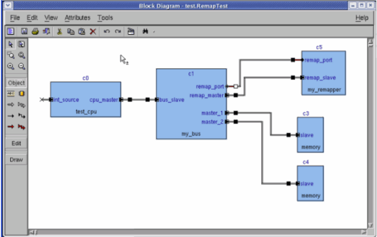

BusRemapper
The BusRemapper model enables you to dynamically configure new address space for the bus master sockets.
As one master port can have multiple (distinct) address spaces, configuring a new address space that can overlap an existing address space requires you to remove the old address space prior to the new configuration.
The BusRemapper model has two generic configuration parameters:
- PROTOCOL with values {ahb, apb, axi, generic}, default is ahb
- BUS_WIDTH with values {8, 16, 32, 64}, default is 32
The BusRemapper model defines:
- A TLM slave port with protocol derived from PROTOCOL and Size=BUS_WIDTH.
- An external, non TLM port of Kind=port and class=“sc_port”<esl::sc_sim::mem_remap_if>.
- base_address — at address 0, width=BUS_WIDTH
- size — at address 0+(BUS_WIDTH/8)
- op — at address 0+2*(BUS_WIDTH/8), defined as Trigger
port — at address 0+3*(BUS_WIDTH/8), Size=256 bytes
A remapping interface has been defined in file mem_remap_if.h. The interface defines two methods:
set_base_address_and_size(const char* portName, uint64 address, unit64 size)
remove_base_address(const char* portName, uint64 address)
To enable address re-mapping in a bus component:
- Add a BusRemapper component to your design.
- Add a TLM master port to the bus and bind it to the BusRemapper's TLM slave port.
- Add an external port to the bus, of Kind=export and class= “remap_export”, and bind it to the BusRemapper's external port.
To remove an existing memory range (for example, address 0 from master port master_1):
- Write the name of the port (master_1) to memory port of the BusRemapper.
- Write the base address (0) to register base_address of the BusRemapper.
- Write the operation (remove=1) to register op of the BusRemapper (this should be the last write, as it triggers the whole operation).
To add a new memory range, (for example, from base address=0x10000 and size=0x10000 to bus port master_2):
- Write the name of the port (master_2) to memory port of the BusRemapper.
- Write the base address (0x1000) to register base_address of the BusRemapper.
- Write the size (0x10000) to register size of the BusRemapper.
- Write the operation (add=0) to register op of the BusRemapper (this should be the last write, as it triggers the whole operation).
Figure 8‑3 shows a usage example of bus remapping.
Figure 8‑3.
Bus Remapping Usage Example
